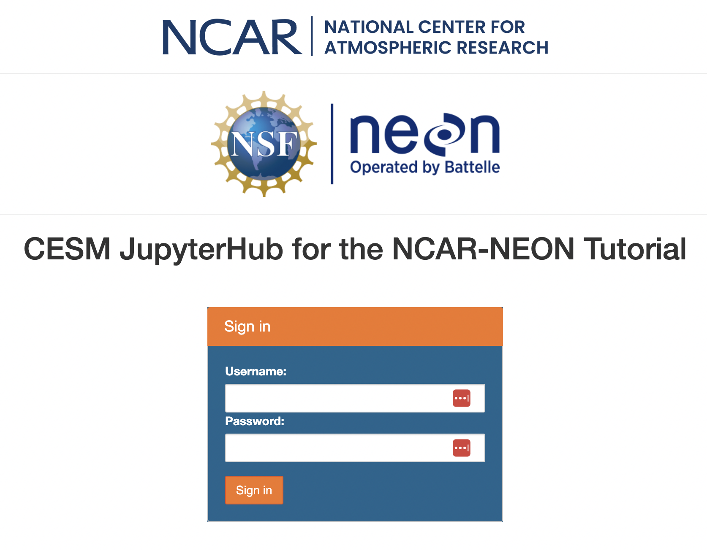
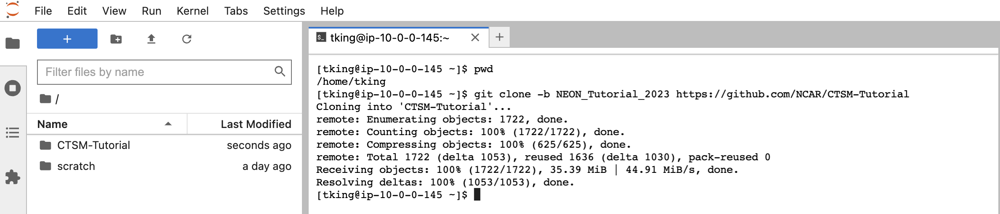

Welcome to the NEON Tutorial 2023#


This tutorial will be used as a resource during the 2023 NEON Tutorial, Flux Course 2023 & ESA 2023 workshop.
The materials and notebooks in this tutorial is published as a Jupyter book here.
These tutorials are designed as an introduction to running the Community Terrestrial Systems Model (CTSM). Users can begin with the notebooks in the Getting Started directory, which contains:
An introduction to CTSM, CESM-Lab, and Git
Running CTSM simulations at NEON tower sites
Evaluating CTSM at NEON tower sites
We’ll also have opportunities to explore more ProjectExamples which describe how to:
Plot data
Make simple code modifications
Change simulated plant type
Change model options (eg, FATES)
Identify how to change model output
Quick Start#
Step 1: Open up CESM-Lab#
In your web browser go to https://neon2023.cesm.cloud
It will automatically open up a portal to connect to the cloud:

Enter your username and password provided with your tutorial registration
This should launch a JupyterLab window in your browser.
IF you need to update the tutorial repository, you can clone CTSM Tutorial Repository:#
Click on the
Terminalicon to open a terminal window.

If the directory does not already exist (everything should be pre-staged, so you shouldn’t have to do this), run the following command to clone this repository. (Just copy and paste the text below into the terminal window that opens in JupyterLab)
git clone -b NEON_Tutorial_2023 https://github.com/NCAR/CTSM-Tutorial
Then, run the following command from within CTSM-Tutorial to update.
git pull
This gives you an updated local copy of the material you’ll need for the tutorial
Can you see a new directory on your navigation sidebar called CTSM-Tutorial? (See the left sidebar of your JupyterLab window)

Notebook Table of Contents#
GettingStarted: These notebooks are the building blocks for all additional notebooks.
1_NEON_Simulation_Tutorial.ipynb : This notebook shows how to run a NEON simulation
2_NEON_Simulation_Visualization.ipynb : This notebook shows how to visualize NEON simulation output
ProjectExamples: These notebooks are project-specific and build upon the GettingStarted notebooks
Basic_CTSM-NEON_Plots.ipynb : This notebook shows how to create plots from NEON data, as well as perform time averaging, etc
CTSMsp_NEON_fromScratch.ipynb : This notebook focuses on using CTSM with satellite phenology
Clone_Case.ipynb : This notebook shares how to clone a case
FATES_NEON_fromScratch.ipynb : This notebook works on creating a FATES case from scratch with NEON
Plot_flux_climatology.ipynb : This notebook provides climatology plotting examples
QuickPlot_CTSM-FATESsp.ipynb : This notebook provides plotting tools for use with FATES run with satellite phenology
QuickPlot_CTSM_h0.ipynb : This plots monthly CTSM data
QuickPlot_CTSM_spinup.ipynb : This plots CTSM cases that have been spun up
customizeCase_PRISM.ipynb : This customizes a case to use PRISM precipitation input data
customizeCase_modelFeatures.ipynb : This customizes various model features
customizeCase_parameterModifications.ipynb : This notebook provides tools for parameter modifications and takes input that is generated from modifyParameterFile.ipynb
modifyParameterFile.ipynb : This notebook modifies a parameter file that can then be used by customizeCase_parameterModifications.ipynb
modifySurfdataFile.ipynb : This notebook modifies a surface data file that can then be used by customizeCase_modelFeatures.ipynb
ContributedNotebooks: These notebooks are contributed by workshop participants who dove further into a particular project.
📚 Resources#
CTSM Repository which includes the CTSM Wiki page that has lots of resources, including much of the following:
Running NEON cases with a container – Running CTSM for NEON cases on a laptop
CLM5 Overview Paper Lawrence et al. 2019 JAMES
CLM5 Diagnostic plots, from the overview paper.
CLM5 ILAMB page, also from the overview paper.
❓ Questions#
For questions about running simulations, please use DiscussCESM Forums:
👍 Acknowledgements#
A number of people have been critical to this effort, including:
Adrianna Foster, Negin Sobhani, Danica Lombardozzi, Will Wieder, Gordon Bonan, & Teagan King who put together tutorial materials.
Brian Dobbins, who put together the AWS configuration of CESM-Lab;
Jackie Shuman, Polly Buotte, & Keith Oleson, who tested tutorial materials;
Erik Kluzek & Bill Sacks, who made CTSM tags needed for running simulations.
Elizabeth Faircloth and Ryan Johnson who helped with tutorial registration, logistics and webpages; and finally the rest of the
TSS staff who provided lecture materials and helped answer questions during the tutorial.
This material is based upon work supported by the National Center for Atmospheric Research (NCAR), which is a major facility sponsored by the National Science Foundation (NSF) under Cooperative Agreement No. 1852977. Staff time on this project was also supported by NSF award numbers 2039932, 2031238, 1926413, and 2120804.